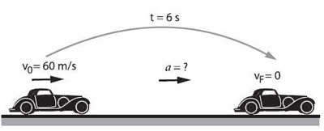

El movimiento rectilineo uniforme es aquel que posee una velocidad constante y se proyecta sobre una linea recta.
- Cuando se afirma que la velocidad es constantes se refiere a que no cambia su valor ni la direccion del movimiento.
- El espacio que recorre es igual que el desplazamiento.
- En tiempos iguales recorre distancias iguales.
- La rapidez de la particula es siempre constante por lo que coincide con el modulo de la velocidad.